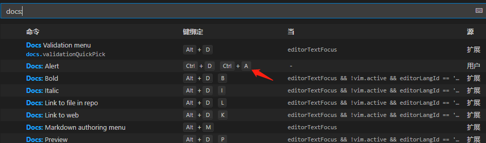
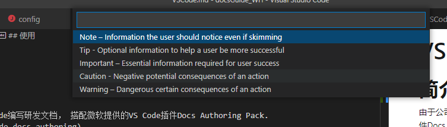
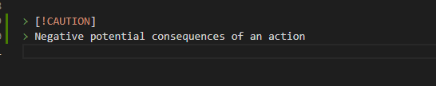
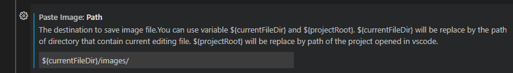

VSCode
简介
由于公司采用 docfx 生成研发文档， 推荐采用 VS Code 编写研发文档， 搭配微软提供的 VS Code 插件Learn Authoring Pack 链接.
Learn Authoring Pack 提供了扩展插件包（Details-Extension Pack），大家可以安装相关插件，如下图：

优势如下： 展示层面：
- 告警标签与微软官方表现一致（Typora不支持）
- 支持图表（mermaid）
编辑层面
- 支持快捷键插入告警标签
常用快捷键
Ctrl+K Ctrl+R : 展示 VS Code 键盘快捷方式参考， 会通过浏览器打开一个 pdf， 如下图:

F1 或 Ctrl+P: 调用主命令框
Ctrl+K Ctrl+S: 键盘快捷方式
Alt+D P：md 预览 (中文输入法下不成功， 建议将快捷键换成 Alt+D Alt+P. PS)
使用快捷键 Ctrl+D+A ， 快速输入 Caution 标签
输入快捷键 Ctrl+K+S, 调出键盘快捷方式， 修改命令 Docs:Alert 的快捷键绑定。

使用快捷键 Ctrl+D+A， 选择 Caution 选项。

文档中就生成了如下文字：

Caution
Negative potential consequences of an action
VSCode支持粘贴图片
由于之前习惯使用 Typora 软件， 截屏后直接可以复制截屏图片到文档中， 但 VS Code 自身不支持该操作。 但强大的VScode插件可提供。 推荐Paste Image, 在扩展中（Ctrl+Shift+X)中搜索。 安装后， 可以在 VS Code 的设置（Ctrl+,)中搜索 pasteImage， 设置图片复制的默认路径。 
支持格式化表格
需要安装 Learn Authoring Pack 提供的扩展插件包 Learn markdown ，可以通过 Details -> Extension Pack 进行安装。
使用文档参考：https://learn.microsoft.com/zh-cn/contribute/docs-authoring/reformat-table